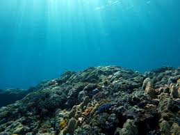

Other Habitats



Katie Bozzone
Jungle Snakes
Venomous snakes are snakes that are poisons and they use that poison to kill there prey or to defend themselves. There are a lot of venemous snakes that live in jungles but the main types are Mambas, coral snakes, cobras, and vipers are all venomous jungle snakes. Snakes diet consists of They eat a range of amphibians, mammals, small birds, and insects. They are mainly predators but some animals do try to prey on them include different snake species.
Fun Facts About Jungle Snakes